Table of contents |
Author: Johannes Buchner Homepage: http://astrost.at/istics/ Further information: How many Supermassive Black Holes are there?Abstract: How the first super-massive black holes (SMBHs) are formed is a highly debated research topic, as are their accretion limits, growth and co-evolution with galaxies. I will present how independent of these questions, we can investigate the occurance of SMBH seeds with a simple generic framework from modern cosmological dark matter N-body simulations. This exposes the link of the local occupation fraction observations and z=6 quasar space densities, and demonstrates that there should be a large, quiet population of SMBHs. Major progress will be made with future space-based gravitational wave detections, as the frequency and redshift distribution of events pin-point the creation and merging efficiency. 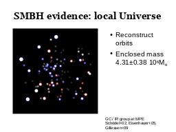 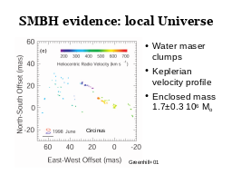 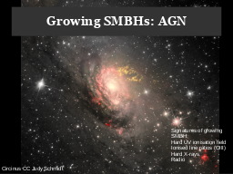 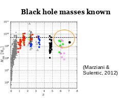
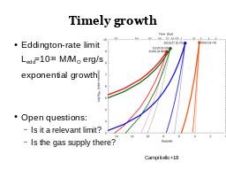
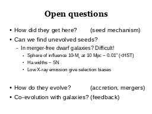
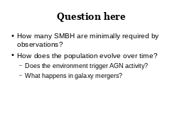
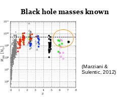
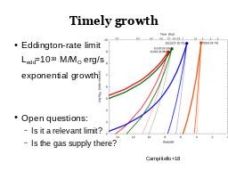
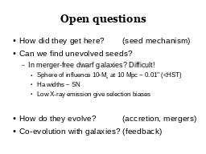
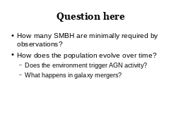

 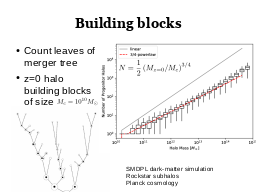
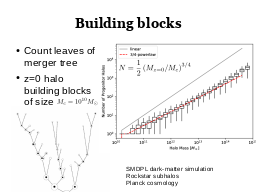
 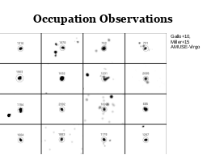
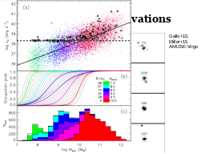
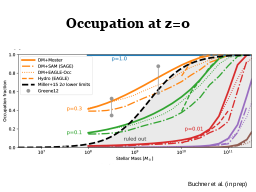
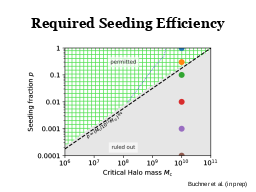
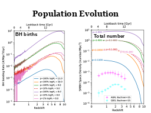
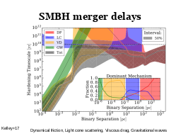
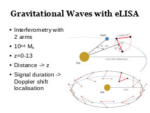
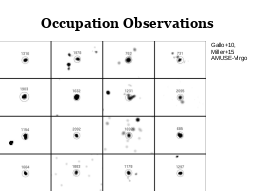
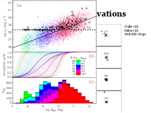
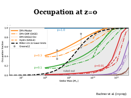
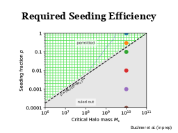
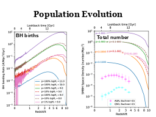
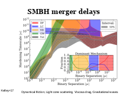
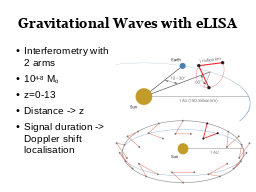


 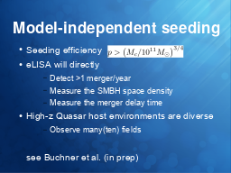
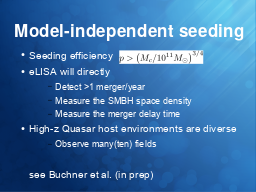
|